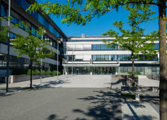

Der Tag der offenen Tür steht an und dafür haben wir hier jetzt nochmal einige Infos für Sie.
Hier auf dieser Website geben wir Ihnen einen genaueren Einblick in unsere Schule.
Neben einigen anderen Fächern existiert auch das Fach MGIN.
Übersetzt heißt das: Medizinische_Geräte_Informatik.
Bei diesem Fach handelt es von allerlei Dinge vor dem Rechner.
Ob Websiten, Word oder Programmieren, in diesem Fach wird einem nie langweilig.
Ja, man lernt sogar ganze Spiele zu programmieren, wie hier unten gezeigt:
Steuerung: Drücke die Leertaste oder klicke auf das Spielfeld zum Springen. ⚠️ Das Spiel wird laufend schneller!
Spiel vorbei!
Also, wie ihr seht ist dieser Zweig sehr spannend.
Ich, als Schüler, kann nur sagen, die 5 Jahre werden sich lohnen.
Und falls man mal nicht weiter weiß, können aufmunternde Zitate oft helfen.
Mein persönliches lieblings Motto/Zitat ist: Auch in dunklen Orten tut sich ein Licht auf.
